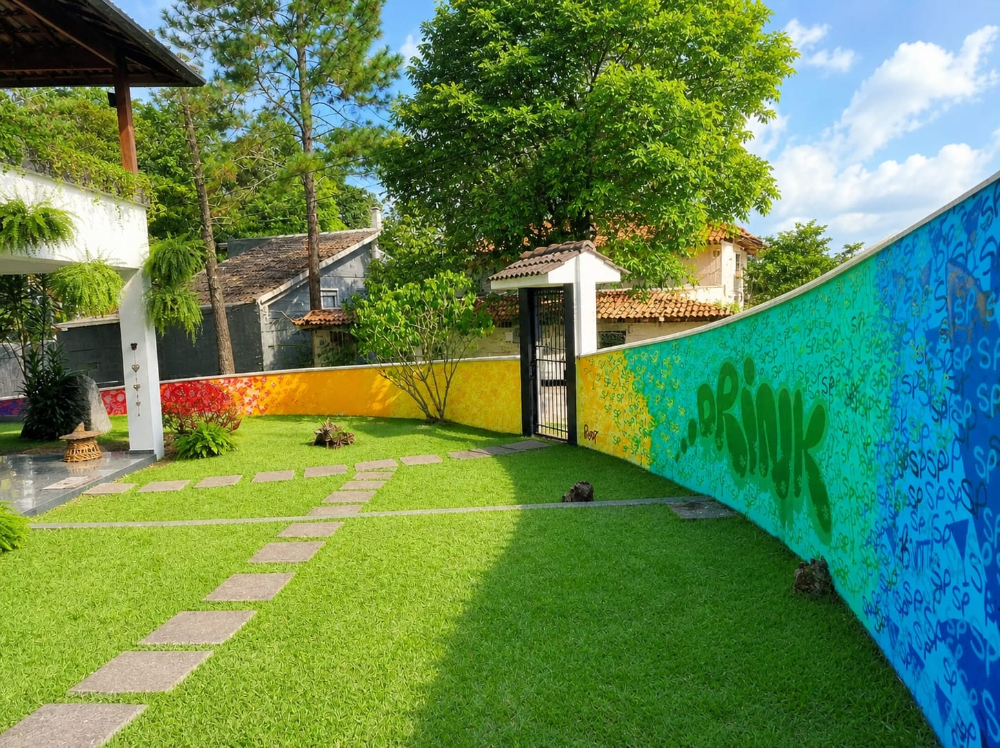
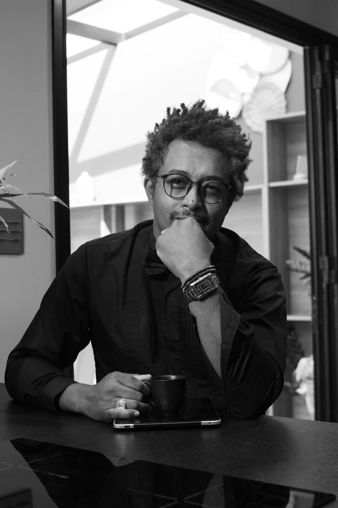
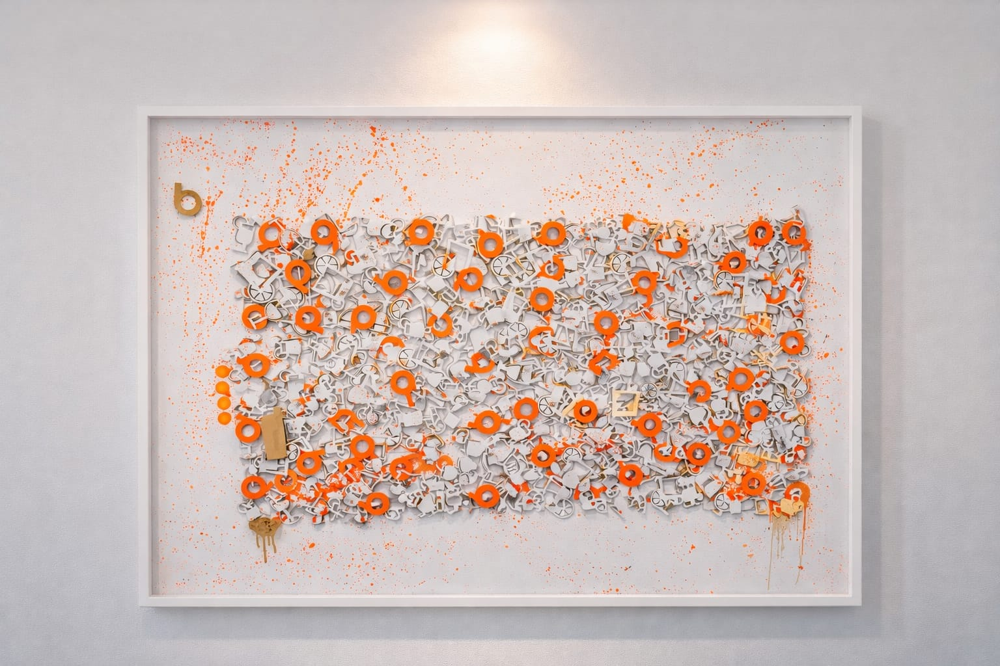
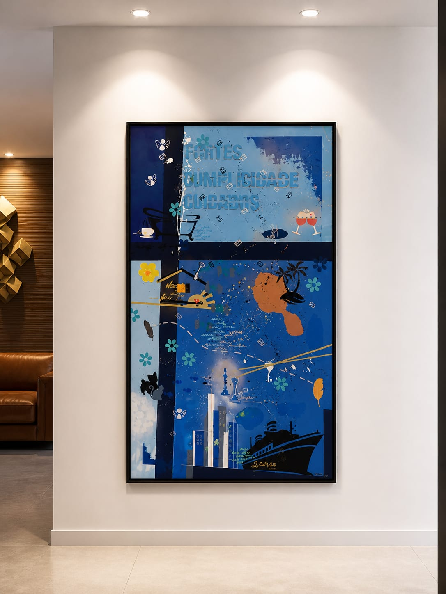
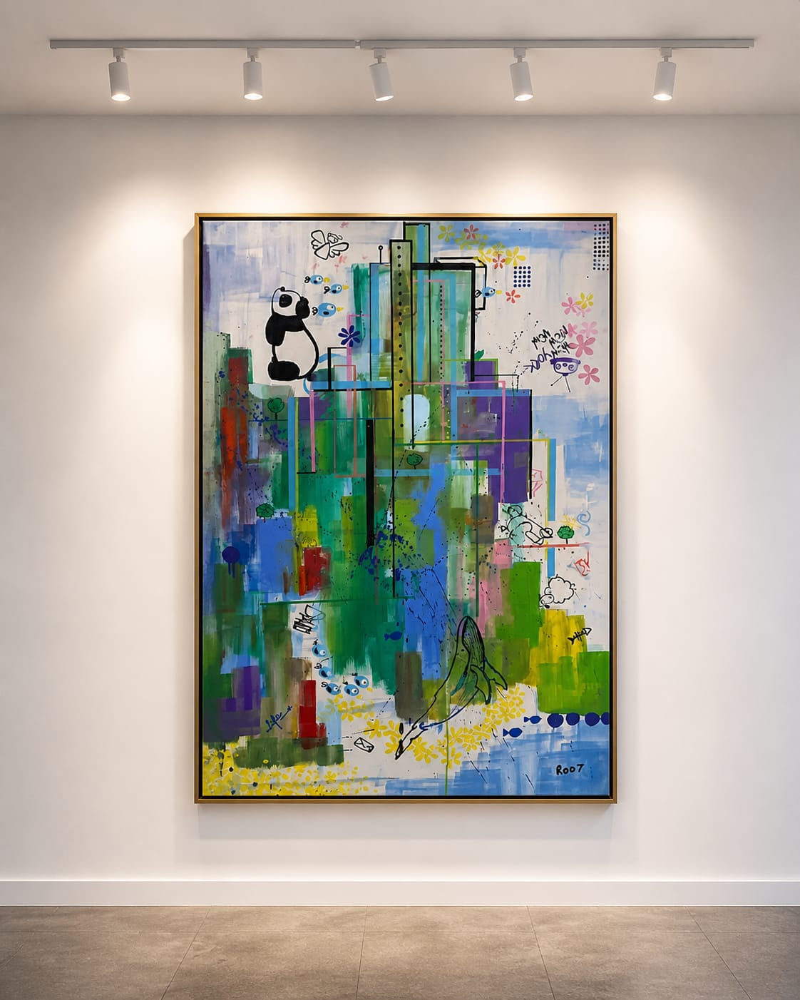
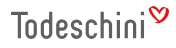
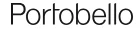
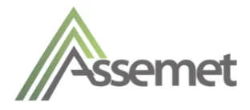

Rodney Silva · Artista Visual
ROD7
Arte que transforma espaço em identidade.
Desde2018 dedicado à arte
DireçãoSão Paulo · Toronto · Miami
FrentesMural · Concept · Histórias · Abstrato · Taki
Arte que transforma espaço em identidade.

A maioria dos ambientes corporativos fala. Poucos dizem alguma coisa. O trabalho do ROD7 começa exatamente aí, no ponto em que uma parede deixa de ser superfície e passa a ser mensagem.
Inspirado por Deus e pelos lugares por onde passou, o ROD7 construiu uma carreira de mais de duas décadas em publicidade, marketing, eventos e moda, antes de se dedicar integralmente à arte.
Ele não chega ao projeto apenas como artista: chega como alguém que passou vinte anos traduzindo marcas em linguagem visual. A diferença é que agora a tela tem o tamanho da parede.
Já expôs em Miami, na Califórnia e em Toronto, e foi convidado pela Todeschini para ocupar o showroom da marca. Toda a sua formação artística é autodidata.

Empresas investem milhões na construção da própria identidade, e param no logotipo.
Troque a placa da recepção e ninguém percebe que mudou de empresa.
O mesmo quadro está em outros mil escritórios. O que deveria diferenciar, padroniza.
Missão e valores aparecem no site. No espaço físico, em lugar nenhum.
O discurso de sustentabilidade existe no relatório, mas não se materializa em nada.
Ninguém fotografa, ninguém comenta, ninguém lembra.
Acabamento caro e impessoal. Bonito, e de ninguém.
Nenhum projeto começa com tinta. Começa com conversa. A obra nasce da história, dos valores e da linguagem que já existem dentro da empresa. O artista não impõe um tema, revela o que já estava lá.
O ROD7 assina o trabalho, mas o protagonista é o cliente. A peça carrega o traço do artista e o DNA de quem encomendou, ao mesmo tempo.
Sempre que o projeto permite, o material é resgatado do descarte. A sustentabilidade não é um selo aplicado no final, é a estrutura da peça.
Arte em paredes, fachadas e portas. Dá escala à identidade da marca.

Quadros corporativos sustentáveis com resíduos de MDF e o símbolo da empresa.

Quadros sob encomenda que traduzem a trajetória de uma pessoa, família ou empresa.

Obras de gesto livre, para presença artística sem narrativa literal.

Personagem autoral. Peças colecionáveis com forte apelo contemporâneo.
Quando a tela tem o tamanho da parede.
O mural é o formato de maior impacto do trabalho do ROD7. Ocupa o campo de visão inteiro, não pode ser ignorado e reconfigura a percepção do espaço já no primeiro segundo.
Entrevista para capturar a essência: o que a empresa faz, no que acredita e o que quer que a pessoa sinta ao entrar.
Visita técnica: medição, superfície, iluminação, circulação e pontos de visada. Projetado para o espaço real.
Tradução da essência em direção visual: paleta, linguagem gráfica, símbolos e narrativa da peça.
Croqui aplicado ao espaço, com dimensões, técnica, materiais, cronograma e investimento.
Refinamento de conceito, cor e composição até a validação final. Nada é executado sem aprovação formal.
Produção no local, com cronograma definido e mínima interferência na operação.
Assinatura da obra e registro fotográfico profissional. Material pronto para uso institucional.



Cada novo projeto amplia o repertório e a escala do trabalho. O próximo já está em preparação.
Todo projeto começa com uma conversa, sem compromisso e sem proposta pronta. Só uma pergunta: o que a sua empresa quer dizer, e ainda não está dizendo?
Falar no WhatsAppSão Paulo · Toronto · Miami